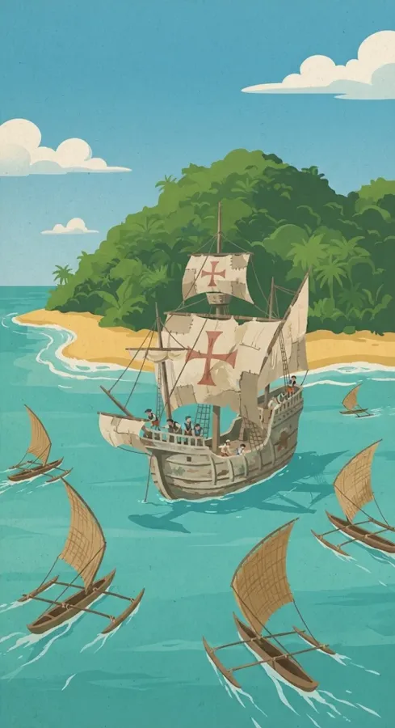
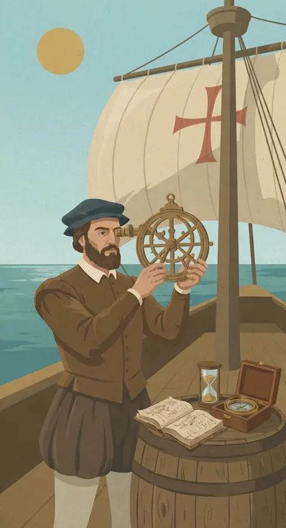
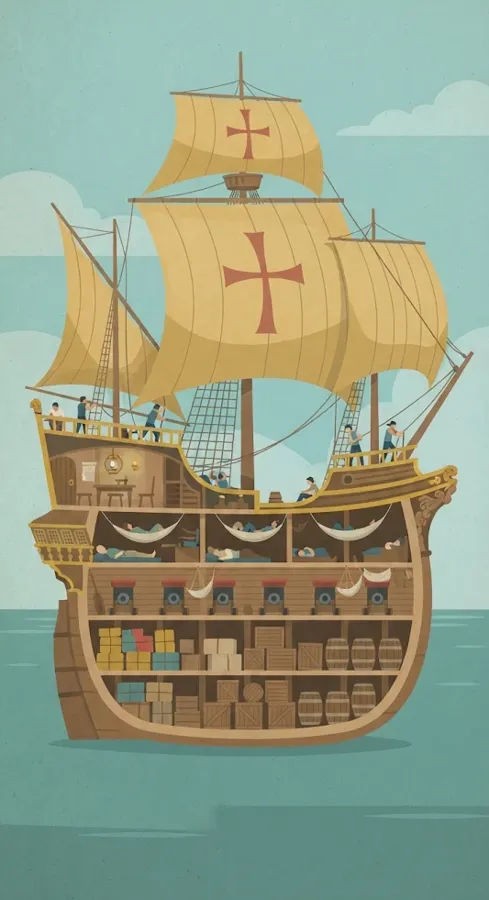
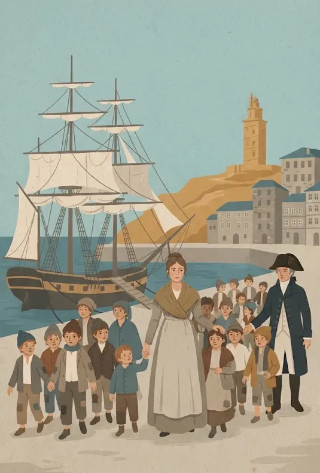

Hace quinientos años, el océano más grande del mundo era un misterio. Los barcos sabían ir, pero no volver; los marinos no sabían dónde estaban, y muchos no regresaron nunca.
En este primer número de Bitácora cruzamos el Pacífico con quienes se atrevieron: capitanes, sabios, marineros y una enfermera gallega. Coged el catalejo.
En noviembre de 1520, tres barcos salieron de un laberinto de canales helados a un océano que nadie había cruzado. Su capitán lo llamó «Pacífico» porque lo encontró en calma. No sabía que tardarían más de tres meses en volver a pisar tierra.
Las hogueras de la orilla sur, que dieron nombre a Tierra del Fuego.
Cinco naves y un paso que nadie conocía
En agosto de 1519 salieron de Sevilla cinco naves al mando de Fernando de Magallanes, un marino portugués al servicio del rey de España. Su misión: llegar a las islas de las Especias navegando hacia el oeste, sin cruzar los mares que controlaba Portugal. Para eso había que encontrar un paso a través de América, un continente que nadie sabía dónde terminaba.
Bajaron por la costa de Sudamérica durante más de un año. Pasaron el invierno austral en la bahía de San Julián, en la Patagonia, y allí perdieron la nao Santiago, que naufragó mientras exploraba la costa. El 21 de octubre de 1520 avistaron un cabo al que llamaron de las Vírgenes. Detrás se abría una entrada de agua.
El laberinto
El estrecho no era un canal recto, sino un laberinto de brazos de mar entre montañas nevadas y glaciares que bajaban hasta el agua. Avanzaban con cuidado, mandando por delante a los barcos para explorar cada canal. En uno de esos reconocimientos, la nao San Antonio, la de más carga, no volvió: su tripulación se amotinó, abandonó la expedición y regresó a España, donde llegó en mayo de 1521 con 55 hombres.
De noche, en la orilla sur, se veían muchas hogueras. Eran de los pueblos que vivían allí, y que los marinos apenas llegaron a ver. Por esos fuegos, Magallanes llamó a aquella costa Tierra del Fuego.
El 28 de noviembre de 1520 las tres naves que quedaban, la Trinidad, la Concepción y la Victoria, salieron al otro lado. Delante tenían un mar inmenso y tranquilo, sin las tormentas ni las corrientes del estrecho. Magallanes lo llamó Mar Pacífico.
Noventa y ocho días sin tierra: bizcocho podrido, cuero y ratas.
Noventa y ocho días sin tierra
Nadie imaginaba lo grande que era. Los mapas de la época dibujaban Asia mucho más cerca de América de lo que está, y la flota navegó hacia el noroeste esperando encontrar islas en pocas semanas. Pasaron noventa y ocho días hasta la siguiente tierra habitada.
En todo ese tiempo solo vieron dos islas pequeñas y deshabitadas, el 24 de enero y el 21 de febrero de 1521. No encontraron donde fondear ni nada que comer, y las llamaron islas Infortunadas.
Antonio Pigafetta, un italiano que iba a bordo y llevaba un diario, contó lo que comían:
«El bizcocho que comíamos no era ya pan, sino un polvo mezclado con gusanos, que habían devorado toda la sustancia, y tenía un hedor insoportable por estar empapado en orines de rata. El agua que nos veíamos obligados a beber era igualmente pútrida y hedionda.»Antonio Pigafetta
Cuando se acabó el bizcocho, comieron las pieles de buey que protegían las vergas del roce de las cuerdas, ablandadas antes varios días en el mar, y serrín. Las ratas se vendían entre los marineros a medio ducado cada una, y aun así había quien no podía comprarlas.
Llegó el escorbuto: las encías se hinchaban hasta cubrir los dientes y los hombres no podían comer. De los unos 166 hombres que empezaron la travesía murieron diecinueve, y otros veinticinco o treinta cayeron enfermos. Magallanes y algunos oficiales se libraron, quizá porque comían dulce de membrillo de sus provisiones.

Las canoas chamorras rodean a los barcos en Guam, marzo de 1521.
Las islas de los Ladrones
El 6 de marzo de 1521 avistaron por fin tierra habitada: las islas Marianas. Fondearon en Guam, y los habitantes se acercaron en canoas rápidas con velas triangulares. Hubo un choque por unos objetos que los isleños se llevaron de los barcos, y los europeos llamaron a aquellas islas «de los Ladrones». El 16 de marzo llegaron a las Filipinas.
Magallanes no volvió. El 27 de abril de 1521 murió en la isla de Mactan, en un combate contra los guerreros del jefe Lapulapu, al que hoy Filipinas recuerda como héroe nacional.
La vuelta al mundo
De las cinco naves, solo una regresó. La Victoria, al mando de Juan Sebastián Elcano, cruzó el océano Índico y bordeó África, y el 6 de septiembre de 1522 llegó a Sanlúcar de Barrameda con dieciocho europeos a bordo. Era la primera vuelta al mundo.
El Pacífico, en cambio, seguía siendo un océano de una sola dirección: se sabía ir, pero no volver. Esa pregunta tardaría cuarenta y cinco años en resolverse.
La primera vuelta al mundo en cifras
5 → 1naves salieron; solo volvió la Victoria
18europeos regresaron, de unos 240 que partieron
98días cruzando el Pacífico sin pisar tierra habitada
Desde Magallanes, los barcos sabían cruzar el Pacífico hacia Asia, pero ninguno conseguía volver. Hicieron falta cuarenta años, un fraile que conocía aquellos mares y una idea sencilla: subir hacia el norte para encontrar el viento a favor.
La San Pedro subió hasta la altura de Japón para encontrar el viento de vuelta.
Un océano de ida
Cerca del ecuador, los vientos alisios soplan siempre del este. Empujan a los barcos hacia Asia y les cierran el camino de regreso. Álvaro de Saavedra lo intentó dos veces desde las Molucas, en 1528 y 1529, y murió en medio del océano. En 1543 fracasó también Bernardo de la Torre. Sin ruta de vuelta, cualquier tierra que España ocupara en Asia quedaba aislada al otro lado del mundo.
El fraile que sabía navegar
Andrés de Urdaneta, nacido hacia 1508 en Ordizia (Guipúzcoa), había viajado de muchacho a las Molucas con la armada de Loaísa y vivido allí casi diez años. Ya era fraile agustino en México cuando Felipe II le pidió que fuera de guía en la expedición de Miguel López de Legazpi, que salió en noviembre de 1564 y llegó a Filipinas en 1565.
Urdaneta pensaba que en el Pacífico los vientos debían girar como en el Atlántico: si en el sur soplaban del este, más al norte tenían que soplar del oeste.
Subir para volver
El 1 de junio de 1565 la nao San Pedro salió de Cebú. En vez de buscar el este, subió hasta pasar los 38 grados de latitud norte, a la altura de Japón. Allí encontró los vientos del oeste y una corriente, la de Kuroshio, que empujaba hacia América. El 8 de octubre, tras unos 130 días, entró en Acapulco. Habían muerto más de una docena de hombres, y solo dieciocho tenían fuerzas para manejar el barco.
La carrera del San Lucas
Dos meses antes, el 9 de agosto, había llegado a México el patache San Lucas de Alonso de Arellano, que se había separado de la flota y volvió por su cuenta. Pero su relato era vago, y Urdaneta había anotado con cuidado rumbos, vientos y latitudes. Por eso la ruta lleva su nombre, aunque hoy muchos historiadores reconocen que Arellano llegó antes.
Por ese camino navegó cada año, durante dos siglos y medio, el galeón de Manila.
Durante siglos, los marinos sabían a qué altura del mundo estaban, pero no cuánto habían avanzado hacia el este o el oeste. Ese error hundió flotas y escondió islas enteras. La solución la encontró un carpintero con un reloj.

Un piloto mide la altura del sol para saber su latitud.
Arriba y abajo: la latitud
Saber la distancia al ecuador era bastante fácil. Bastaba con medir a qué altura subía el sol a mediodía, o la estrella Polar de noche, y consultar unas tablas. Los pilotos de Magallanes y de Urdaneta lo hacían con el astrolabio náutico o el cuadrante, y con un error de pocas leguas sabían su latitud.
Derecha e izquierda: la longitud
La longitud, en cambio, era un misterio. El cielo no da ninguna pista de cuánto has avanzado hacia el este o el oeste. Los pilotos la calculaban «a estima»: con la brújula sabían el rumbo, con la ampolleta de arena contaban el tiempo y echando al agua una tablilla atada a una cuerda con nudos medían la velocidad. Cada pequeño error se iba sumando día tras día, y en un viaje largo el barco podía estar cientos de leguas lejos de donde creía.
En el Pacífico, el más ancho de los océanos, era peor. Álvaro de Mendaña descubrió las islas Salomón en 1568, pero los mapas las situaron tan mal que cuando volvió a buscarlas en 1595 no las encontró. Ningún europeo volvió a verlas hasta 1767.
Un premio para quien lo resolviera
Los reyes ofrecieron fortunas. Felipe III de España prometió a finales del siglo XVI 6.000 ducados y una renta de por vida a quien encontrara la longitud en el mar. Galileo se presentó al concurso en 1616 con una idea brillante: usar las lunas de Júpiter como un reloj del cielo. Funcionaba en tierra, pero no en la cubierta de un barco que se movía.
En 1707 cuatro barcos de guerra ingleses chocaron contra las islas Sorlingas, al suroeste de Inglaterra, por no saber bien dónde estaban, y murieron entre 1.400 y 2.000 marinos. Siete años después, en 1714, el Parlamento británico ofreció hasta 20.000 libras a quien diera la longitud con un error menor de medio grado.
Un cronómetro marino del siglo XVIII, colgado de aros para que no se incline.
La idea del reloj
La clave era la hora. La Tierra da una vuelta completa, 360 grados, en 24 horas: 15 grados cada hora. Si un marino sabía qué hora era en su puerto de salida y la comparaba con la hora del barco, la diferencia le daba la longitud. El problema era tener un reloj que no se atrasara con el balanceo, la humedad, el frío y el calor de meses de viaje.
Un carpintero de Yorkshire
John Harrison (1693–1776) era carpintero y había aprendido solo a hacer relojes. Dedicó más de cuarenta años al problema. El cuarto, el H4, terminado hacia 1759, parecía un reloj de bolsillo enorme de unos 13 centímetros.
El 18 de noviembre de 1761 el H4 salió de Portsmouth a bordo del navío Deptford rumbo a Jamaica. Tras 81 días de viaje se había atrasado solo 5 segundos: un error de una milla náutica. En una segunda prueba, en 1764, a la isla de Barbados, el error fue de menos de diez millas.
Aun así, le exigieron más pruebas y copias, y cobró más de 23.000 libras repartidas a lo largo de 36 años.
El cronómetro da la vuelta al mundo
Una copia del H4 hecha por Larcum Kendall viajó con el capitán Cook en su segundo y su tercer viaje por el Pacífico. Pocos años después, la expedición española de Malaspina, que salió de Cádiz en 1789, llevaba ya cronómetros marinos para trazar sus mapas. Desde entonces, perderse en el mar dejó de ser cuestión de mala suerte.
Durante 250 años, cada verano, un galeón salía de Manila cargado de sedas y porcelanas rumbo a México. Cuatro, cinco o seis meses sin pisar tierra, cientos de personas apretadas entre fardos. ¿Cómo se vivía allí dentro?

Un galeón por dentro: bodega, cañones, hamacas y el camarote del capitán.
Un pueblo que flotaba
Un galeón era un pueblo pequeño con sus jerarquías. Arriba estaban el capitán, el maestre, el piloto y los oficiales; después, los marineros; por debajo, los grumetes, jóvenes que aprendían el oficio; y al final, los pajes, niños que limpiaban, servían y cantaban las horas, muchos de ellos huérfanos. Además viajaban soldados, frailes, comerciantes y algún pasajero con su familia.
Para hacerse una idea: el galeón Juncal, que zarpó de Veracruz en 1631, llevaba 145 hombres de mar —17 oficiales, 42 marineros, 33 grumetes y 13 pajes— y 108 soldados. En el galeón de Manila, menos de un tercio de la tripulación era española: muchos marineros eran filipinos.
Lleno hasta los topes
El galeón salía de Cavite, junto a Manila, a finales de junio o en los primeros días de julio, para aprovechar los vientos de verano. Para volver a América tenía que subir hacia Japón y cruzar el Pacífico por el norte, la ruta de Urdaneta, y el viaje duraba de cuatro a seis meses.
Cada rincón se llenaba de mercancía: sedas, terciopelos, porcelana china, especias, marfil, lacas y biombos. Se cargaba la bodega, pero también las cubiertas, los pasillos y hasta los camarotes. Algunos galeones iban tan cargados que navegaban mal, y más de uno se perdió por el exceso de peso.
Dónde dormir
Solo el capitán y los oficiales tenían camarote. Los demás dormían donde podían: en la cubierta de los cañones, entre las piezas de artillería, sobre los fardos o al raso. No había intimidad, ni baños, ni forma de lavarse con agua dulce. Las ratas, las chinches y los piojos viajaban con todos.
La comida del día: un grumete remueve la olla en el fogón de cubierta.
Qué se comía
La base era el bizcocho, un pan cocido dos veces para que durara meses sin enmohecer, aunque al final del viaje estaba lleno de gusanos. Se acompañaba de legumbres, garbanzos, habas y lentejas, pescado seco, tocino, aceite, vinagre y vino. Para la flota de Magallanes se embarcaron más de seis toneladas de legumbres y se calculó media azumbre de vino al día por hombre, alrededor de un litro.
Al principio del viaje había gallinas, cerdos e incluso alguna vaca viva, pero duraban poco. Se cocinaba en la cubierta, en un cajón con tierra o arena donde se encendía el fuego, la «isleta de las ollas». El agua era lo más valioso: se guardaba en barriles y se repartía con medida, vigilada por un alguacil del agua.
Rezar, jugar y resistir
El día se medía con la ampolleta de arena, y los pajes cantaban cada media hora al darle la vuelta. Los capellanes decían misa y confesaban a los moribundos. Los naipes y los dados estaban prohibidos, pero se jugaba igual.
Lo peor llegaba en las últimas semanas. Con el agua podrida y sin alimentos frescos aparecía el escorbuto, y en algunos viajes morían decenas de personas. El viajero italiano Giovanni Francesco Gemelli Careri, que hizo el viaje de Manila a Acapulco en 1697, tardó casi medio año y lo recordó como una pesadilla de mala comida, epidemias y tormentas. Aun así, cada año volvía a salir un galeón.
Isabel Zendal, la enfermera de los veintidós niños
En 1803 la viruela mataba cada año a miles de personas en América y Asia. Para llevar hasta allí la vacuna, que solo vivía unos días, España ideó un plan insólito: usar a unos niños como frascos vivos. Alguien tenía que cuidarlos durante el viaje.

Isabel Zendal y los niños de la Casa de Expósitos en el puerto de La Coruña, 1803.
Una campesina de Ordes
Isabel Zendal Gómez nació el 26 de febrero de 1773 en Santa Mariña de Parada, en el concello de Ordes (A Coruña), en una familia de labradores pobres. Su madre murió de viruela cuando ella tenía trece años. Hacia los veinte se fue a trabajar a La Coruña, al Hospital de la Caridad, y en 1793 tuvo un hijo, Benito, al que crio sola.
En 1800 la nombraron rectora de la Casa de Expósitos de la ciudad, donde se recogía a los niños abandonados. Cobraba 50 reales al mes y una ración diaria de pan.
Una vacuna que había que llevar en brazos
En 1796 el médico inglés Edward Jenner había descubierto que el pus de la viruela de las vacas protegía contra la viruela humana. El problema era transportarla: fuera del cuerpo se estropeaba en pocos días. El médico alicantino Francisco Javier Balmis propuso una solución. Se vacunaba a un niño y, a los nueve o diez días, cuando le salían las pústulas en el brazo, se tomaba de ellas el líquido para vacunar a otros dos. Así, de brazo en brazo, la vacuna podía cruzar el océano.
Para eso hacían falta niños que no hubieran pasado la viruela, y una persona que los cuidara. Balmis eligió a 22 niños de entre tres y nueve años, casi todos de la Casa de Expósitos, y a su rectora. Entre ellos iba su hijo Benito.
A bordo, los niños llevaban la vacuna en el brazo y la pasaban de uno a otro.
El viaje de la María Pita
El 30 de noviembre de 1803 la corbeta María Pita salió del puerto de La Coruña. Pararon un mes en Tenerife, vacunando, y el 9 de febrero de 1804 llegaron a Puerto Rico. Durante la travesía, Isabel los alimentaba, los lavaba, los consolaba cuando lloraban y vigilaba que no se rascaran los brazos ni se contagiaran antes de tiempo. Uno de los niños murió en el viaje.
Desde Venezuela, la expedición se dividió: un grupo bajó hacia América del Sur y el de Balmis siguió a Cuba y a México. Los niños gallegos se quedaron en México, donde las autoridades se comprometieron a educarlos.
Al otro lado del Pacífico
Pero el viaje no había terminado. El 7 de febrero de 1805 Isabel salió de Acapulco a bordo de la fragata Magallanes, rumbo a Filipinas, con 26 niños mexicanos que llevaban la vacuna en los brazos. Llegaron a Manila el 15 de abril. Desde allí la vacuna pasó a China.
Balmis, que no era hombre de elogios, escribió de ella en 1806 que había perdido la salud por «el excesivo trabajo y rigor de los diferentes climas». Isabel volvió con los niños a México y se quedó a vivir en Puebla con su hijo. Nunca regresó a España, y no sabemos cuándo murió.
Una heroína recuperada
Durante casi dos siglos su nombre se olvidó. Hoy se la considera la primera enfermera de la historia en una misión sanitaria internacional. En México, el premio nacional de enfermería lleva su nombre, y en 2020 Madrid lo dio a un nuevo hospital levantado durante la pandemia.
Su viaje
1773Nace en Santa Mariña de Parada (Ordes)
1800Rectora de la Casa de Expósitos de La Coruña
30 nov 1803Sale de La Coruña en la María Pita con 22 niños
9 feb 1804Llega a Puerto Rico
7 feb 1805Sale de Acapulco hacia Filipinas con 26 niños
Del 27 de noviembre al 3 de diciembre: siete fechas, siete siglos.
27 nov1095
Urbano II llama a la cruzada
En Clermont (Francia), el papa pide a los caballeros cristianos que vayan a Jerusalén. Empieza la Primera Cruzada.
28 nov1520
Magallanes entra en el Pacífico
Tres naves salen del estrecho al océano que nadie había cruzado. Lo llamará Mar Pacífico.
30 nov1803
Sale la expedición Balmis
La corbeta María Pita zarpa de La Coruña con 22 niños que llevan la vacuna de la viruela en los brazos.
1 dic1640
Portugal recupera su independencia
Un grupo de nobles se alza en Lisboa y proclama rey a Juan IV. Termina la unión con la monarquía de Felipe IV.
1 dic1955
Rosa Parks no se levanta
En Montgomery (Alabama), se niega a ceder su asiento del autobús a un blanco. Su detención inicia un gran boicot por los derechos civiles.
2 dic1805
Batalla de Austerlitz
Napoleón derrota a los ejércitos de Austria y Rusia en la llamada «batalla de los tres emperadores».
3 dic1967
Primer trasplante de corazón
En Ciudad del Cabo, el cirujano Christiaan Barnard trasplanta un corazón humano. El paciente vivió dieciocho días.
¿Sabías que…?
Las fechas anteriores a 1582 están en el calendario juliano, el que se usaba entonces. Ese año se pasó al gregoriano y, para ajustar, en España se saltaron diez días: al 4 de octubre le siguió el 15.